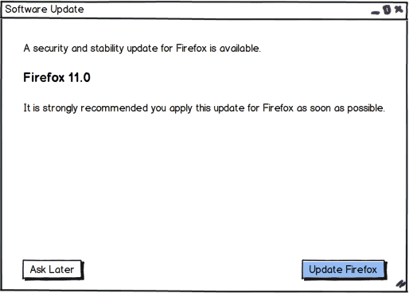
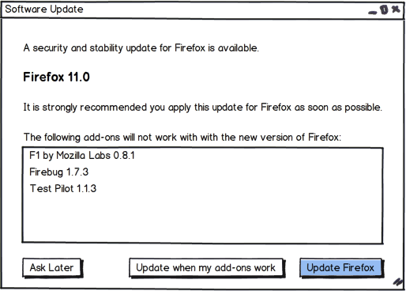

A Proposal for Updates with Add-ons.
Add-ons are an important part of many Mozilla products, and many people have noticed that they’ve taken a hit as we’ve switched to the Rapid Release process. To help users have a little more control over how well their Firefox works, I would like to propose the following slight modification to the automatic Update process:
It all starts when Firefox (and Thunderbird) notice an update is available.
We immediately check the user’s add-ons to see if they are compatible, or if there are compatible versions we haven’t downloaded yet.
If all the add-ons are compatible (or will be made so at the next download), we show the NoAddons dialog:

It‘s the same as the current Firefox or Thunderbird update dialog, and as you would expect, the “Ask Later” and “Update Firefox” buttons do the same things that they do now.
On the other hand, if there are in-compatible add-ons, we show the Addons dialog:

As you can see, we let the user know which add-ons are incompatible, and give the user an extra button at the bottom to do something different.
The new “Update when my add-ons work” button (wording to be clarified later) will check the add-ons periodically, and automatically update Firefox when all the add-ons are compatible. If the add-ons aren’t compatible after a week (period of time to be configurable), the user will be shown this dialog again, with the (hopefully smaller) list of incompatible add-ons.
Showing the user which add-ons are incompatible will let them decide whether the add-ons are important enough to not upgrade, or whether they can live with the (hopefully short) period of reduced functionality.
As always, comments welcome, but keep them polite or they’ll be deleted.